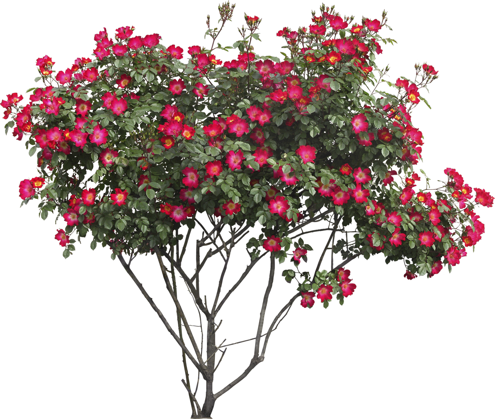

Las plantas
Las plantas son seres vivos y autosuficientes, es decir que pueden alimentarse solas y crecer solas. Estos seres vivos pertenecen al mundo de los vegetales, pueden vivir en la tierra o en el agua, nos ofrecen sombra en los días muy soleados, y retienen el exceso de agua para que sus hojas estén siempre verdes. Una de sus principales virtudes es reconvertir en alimentos todos aquellos desperdicios que los humanos producimos, es decir, pueden hacer limpieza de la tierra. Además, sujetan la tierra ante posibles derrumbes, purifican el aire, absorben el carbono y sueltan el oxígeno para que podamos respirar; y por si fuera poco son el hogar de muchos animales.
